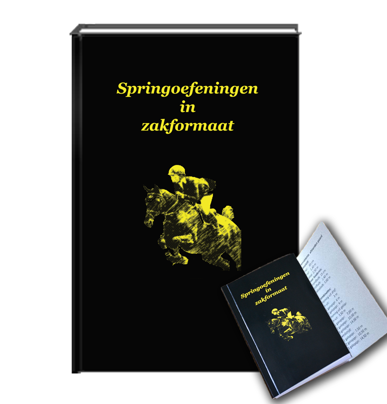
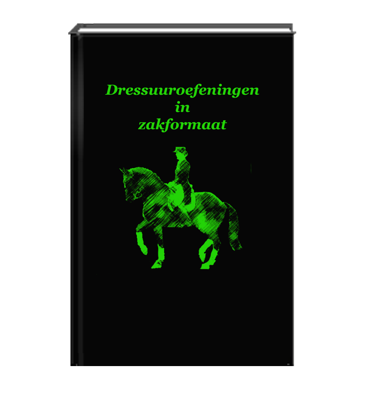

Parcoursschetsen 30 x 60 meter
| Parcoursschetsen voor de amateur |
|
De schetsen zijn niet gemaakt door een professionele parcoursbouwer en zijn dus niet bedoeld voor officiële wedstrijden! Ze zijn slechts bedoeld als suggesties als je zelf een keer een parcours wilt bouwen. De afstanden en hoogtes moeten aangepast worden aan de doelgroep en de omstandigheden zoals binnen- of buitenparcours. Zie voor informatie over hoogtes en afstanden: Parcours data De hindernissen hebben een breedte van 3 meter. Als je een parcours gaat opbouwen, leg je eerst een balk op de grond op de geplande plaats van de hindernissen (met eventueel het hindernisnummer ernaast) en controleer je of de lijn goed loopt. Daarna bouw je de hindernissen pas op. Zodoende kun je de hindernis precies haaks op de te rijden lijn plaatsen. TIP: Roteer de parcoursen horizontaal of verticaal en je hebt wederom een bruikbaar parcours! Parcousschetsen voor een rijbak van 20 x 40 |
terug naar boven
| Parcoursschets 30x60m nr. 1 | |

|
10 hindernissen, 11 sprongen 1 dubbel Uitprinten?: Schets 1 |
terug naar boven
| Parcoursschets 30x60m nr. 2 | |

|
10 hindernissen, 11 sprongen 1 dubbel Uitprinten?: Schets 2 |
terug naar boven
| Parcoursschets 30x60m nr. 3 | |

|
10 hindernissen, 11 sprongen 1 dubbel Uitprinten?: Schets 3 |
terug naar boven
| Parcoursschets 30x60m nr. 4 | |

|
10 hindernissen, 11 sprongen 1 dubbel Uitprinten?: Schets 4 |
terug naar boven
| Parcoursschets 30x60m nr. 5 | |

|
10 hindernissen, 11 sprongen 1 dubbel Uitprinten?: Schets 5 |
terug naar boven
| Parcoursschets 30x60m nr. 6 | |

|
10 hindernissen, 11 sprongen 1 dubbel Uitprinten?: Schets 6 |
terug naar boven
| Parcoursschets 30x60m nr. 10 (moeilijk) | |

|
10 hindernissen, 12 sprongen 1 driesprong Uitprinten?: Schets 10 |
terug naar boven
| Parcoursschets 30x60m nr. 11 (moeilijk) | |

|
11 hindernissen, 14 sprongen 1 driesprong 1dubbelsprong Uitprinten?: Schets 11 |
terug naar boven
| Parcoursschets 30x60m nr. 12 (heel moeilijk) | |

|
12 hindernissen, 15 sprongen 1 driesprong 1 dubbelsprong Uitprinten?: Schets 12 |
terug naar boven
| Springoefeningen in zakformaat | |
|  |
Wil je verschillende springoefeningen en enkele parcoursschetsen in een handig boekje? Een leuk geschenk voor jezelf, je vriend(in) of familielid. Lees meer ............ |
| Dressuuroefeningen in zakformaat | |
|  |
Wil je verschillende dressuuroefeningen in een handig boekje? Een leuk geschenk voor jezelf, je vriend(in) of familielid. Lees meer ............ |
terug naar boven